The Walker's Haute Route
forward to part two or part three…
Saturday
After an all night drive (from 12:30 am to 7:00 am), I staggered onto the small train taking me from the parking lot at Taesch to Zermatt proper. Once in town I found some breakfast and a sandwich for lunch, then immediately wimped out and rode a sort of elevator train 600 meters up to Sunnegga at 2288 meters. With such a short time for a long trip, I knew I’d make compromises to the idea of walking every step of the way, and this was one of them. But hey…I’m on vacation!
The view of the Matterhorn and the Breithorn from the top station was really stunning. The former peak is so much taller and pointier in person than pictures can describe. Rising immediately west of the town was the Ober Gabelhorn and probably my favorite, the Zinalrothorn, all rising almost 10,000 feet above the town. I was stunned by the number and size of the glaciers in every direction of the compass. The sky was blue and clear, as if it had rained the day before and washed the air.
Wow, okay now I’m hiking away to the north, with the Matterhorn at my back and other snow giants on either side. First a gentle road contoured along the open hillside, then I left the “blight” of the lift-served area (it was still a nice place), and couldn’t resist taking a trail that climbed to a pass above the Taeschalp, from which the droning of cowbells made a comforting sound. Hiking down I was again amazed by a new snow mountain, the Allalinhorn, visible behind a battlement of glaciers at the head of the Taeschalp. I mentally traced lines up the glacier, sure of the safest way, in that confident way being safe in the valley produces!
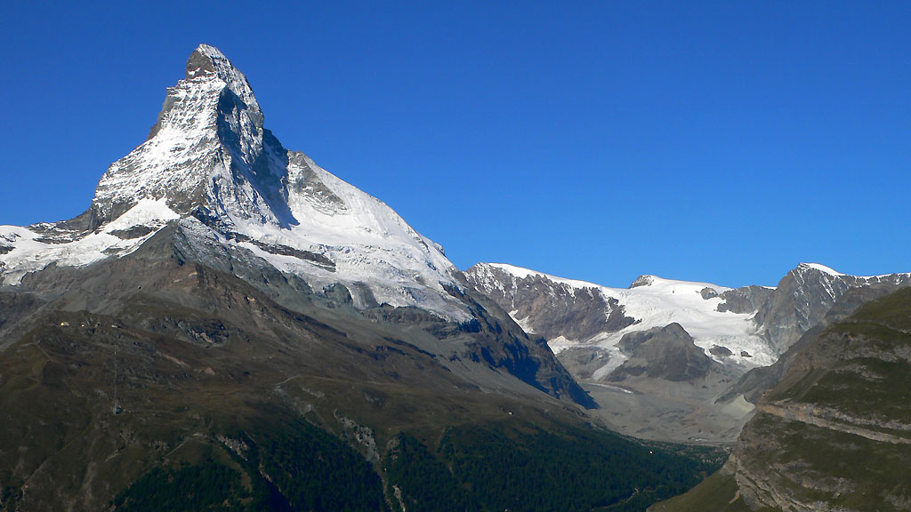
The Matterhorn (duh)
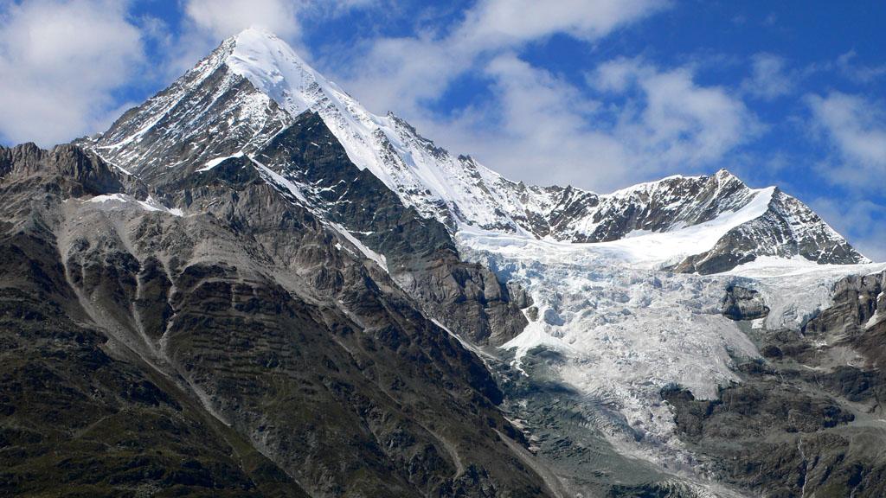
The Weisshorn
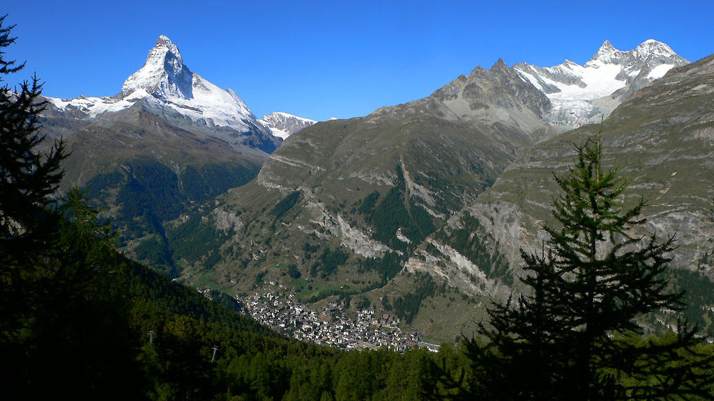
Zermatt in the Mattertal
“Where are all the people?” I thought. Part of mental preparation for a long hike in a scenic climax zone of the alps was imagining wading through the hordes people had told me about. But it was just like any trail in the U.S.! The odd couple came along now and then, but I was alone for long stretches. This would only increase as the trip went on - sometimes I’d be alone for many hours.
I was on a new trail called the Europaweg (“europe way”). It traverses a rocky steep hillside for many miles, with great views looking down the valley and across. The extra 1200 foot climb and descent combined with the all-night drive had taken a lot out of me, though. At work Friday, we’d had an all day “post-mortem” for our shipping product at a hotel. This was a good thing, though such events are draining too. As I walked up and down the mountainside, I kept thinking about software process models, code reviews, requirements documents and the various other practices of our industry. I shook my head to focus on the powerful Zinalrothorn and a major rock face on the east side. Suddenly the sky was no longer blue, with clouds coming in from the north.
I was pleased to walk high above the huge indoor parking lot where my car would wait for a week. Looking down on the town of Randa, I was amazed by the huge landslide that had crashed down 15 years before. A bulldozer scraped ineffectually at a lower corner of it. The explosion must have been earth-shattering, and the resulting floods because of the blocked river terrible.
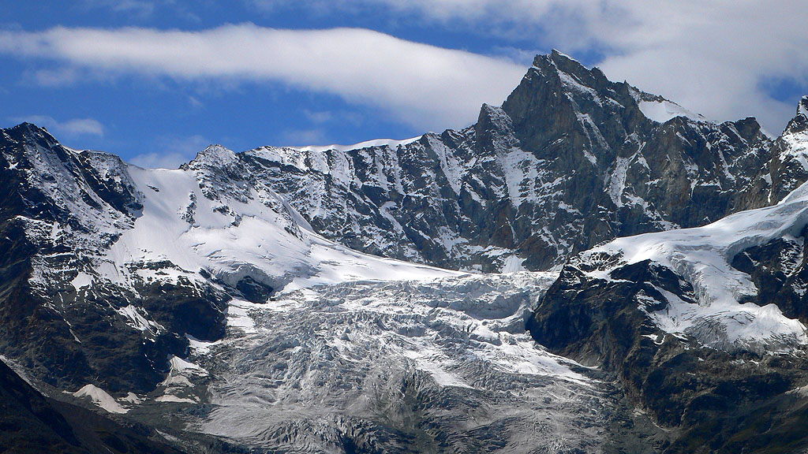
The Zinalrothorn
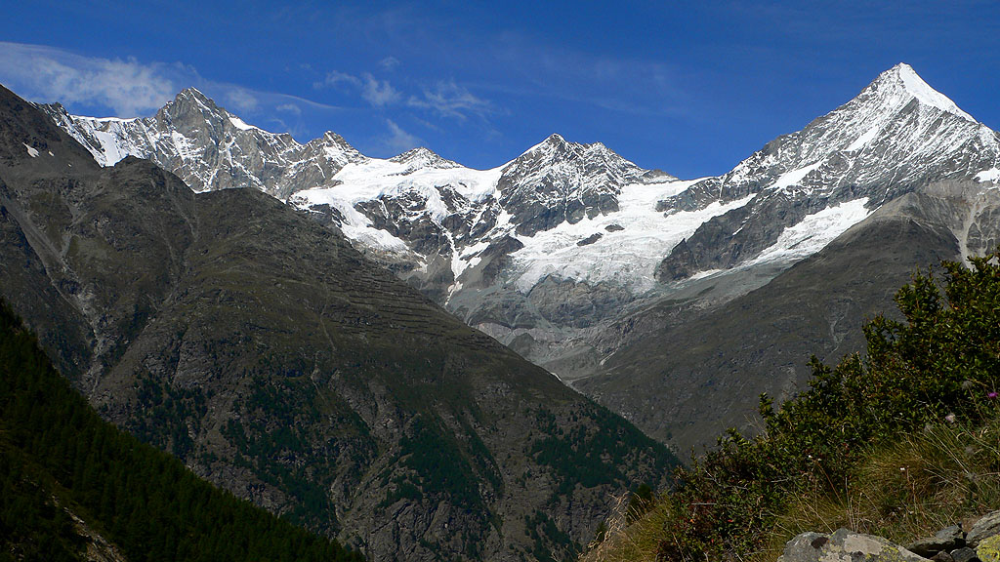
The Zinalrothorn on the left, the Weisshorn on the right
By 2:30 pm, I’d reached the Europa Hut. Tired as I was, it seemed a welcome place for the night. I ordered some lunch of eggs and potatoes, then went to sleep in an upper bunk. Rising for dinner, I conversed with a really nice Swiss guy named Henri. He had several spine-chilling stories of climbs on the Matterhorn gone wrong. In one case, a guide was standing in the door of a bivouac hut, in relative safety. His client slipped, falling off the mountain and whisking the guide out of the hut to his death. It sounds like the sheer number of applicants, at all skill levels becomes a real danger, especially combined with a change in the weather.
But this wouldn’t be a climbing trip for me. How many years had it been since I just went for a hike? No ambitions to climb peak X or Y at the back of some dark valley. It was something I’d wanted to do for a few years, feeling a need to get back in touch with the first experiences I’d had in the hills. I had taken to heart something Kev Reynolds said in his excellent book Walking in the Alps:
“…from the point of view of the walker who is, after all, in the most favoured position to witness and enjoy mountain scenery in all its abundant variety. The motorist is divorced from all that is best in the Alps by being restricted to the highway. The non-active tourist is confined to mechanised means of uplift, the climber’s attention is for the most part taken up with the intracacies of his chosen route, while the downhill skier needs full concentration in the rush to get to the foot of the slope without accident. Only the mountain walker, the individual with good general fitness, a modicum of scrambling experience and an eye for the hills, can move far enough and at the right pace to enjoy the full range of wonders that the Alps so generously offer.”
(Humorously, I didn’t have Kev’s travel companion to this hike, Chamonix to Zermatt: A Walker’s Haute Route. By the time I decided to make this hike, there was no time to order the english language guidebook from Amazon, and I couldn’t find it in Munich. So instead I had to cringe and tear pages out of Walking in the Alps. Along the way, a fellow gave me xeroxed copies of 3 pages from the book, about the Turtmanntal valley. I read and re-read those pages that day!)
Sunday
In the night it rained, and I moped at breakfast, wondering if I should abandon the trip…the car was still nearby. But stepping out revealed mostly blue sky, with mysterious wreaths of cloud around the high peaks. “Hey, this is alright” I thought, brightening considerably. Henri joined me, and we hiked together for some fun hours. I enjoyed this portion of the trail much more. There was less up and down, we saw some wildlife, and there were exciting edge-of-cliff sections with a little hand-railing should you need it. Henri was hoping to travel north then back south over the ridge to Sass-Fee. We reached a dramatic lookout point back to a mountain called the Ulrichhorn with another massive glacier. There was a cute statue of St. Bernard - the patron saint of the Alps! He and his contingent of monks saved many travellers from bandits and avalanches in the first century A.D., at the nearby pass that bears his name. I was mentally adding up how many days I had and how far I had to get, gradually coming to think I needed to cover a lot more ground today. Traditionally, I would stop at the town of St. Niklaus below, however I wanted to make it over the distant Augstbordpass to Gruben. I just can’t seem to resist a certain goal-orientation. A passerby had said the trail was especially beautiful to the west of Arolla, and at my current pace it would be tough to even make it there. Yet wheels were turning!
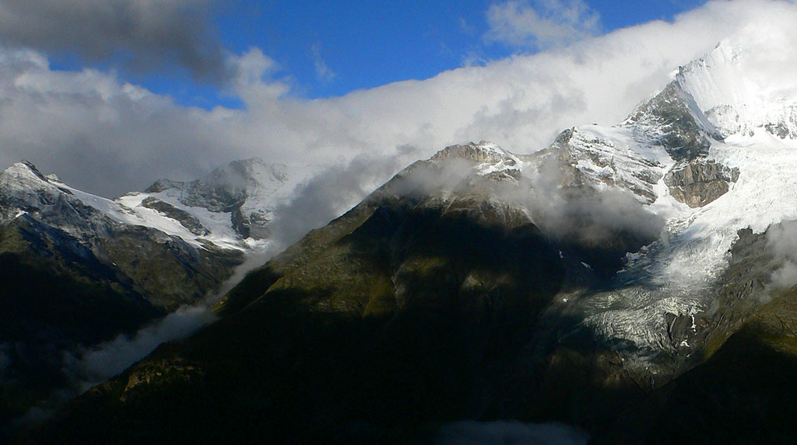
The Weisshorn, mysterious in clouds
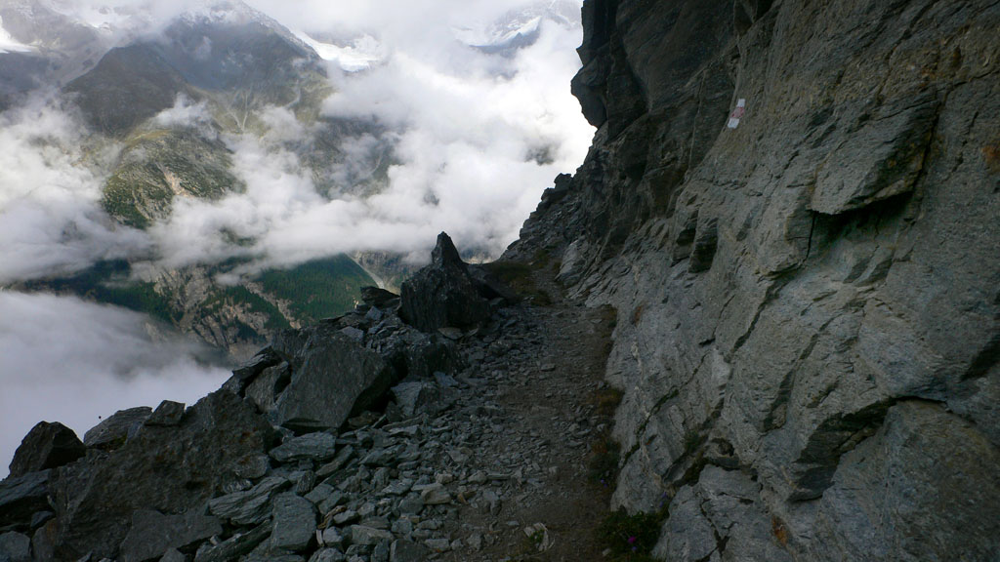
Scenery along the Europaweg
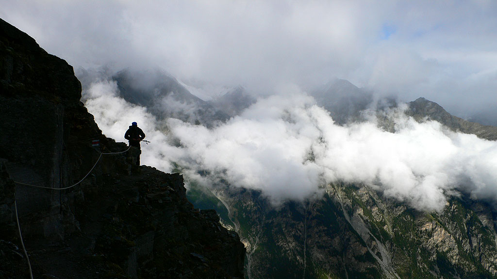
Henri along the beclouded Europaweg trail
Okay, first off I needed to drop the bivy gear. I was carrying a sleeping bag, a bivy sack and a ground pad. It was slowing me down some, and I realized I didn’t want to use the gear in this weather. If it did rain hard, my sleeping bag would likely get wet, then I’d be tired for a day. If it rained the next night, I’d really be cold. So after saying goodbye to Henri, I hurried 4000 feet down to St. Niklaus, hoping to find a locker in the train station to stash my gear. Barring that, I’d have to hide it in the woods. You really think hard about how to hide 500 dollars worth of gear in one of the most popular hiking areas of the world!
Near the town I went through a charming old mini-village of ancient swiss houses. They seemed empty, but vaguely lived in. I liked how narrow the alley between the houses was. I got irritated by a strange trail re-routing that made me re-climb 300 feet only to come out on a logging road a half-mile back towards Zermatt. Wierd things often happen to trails near towns. A patchwork of property and logging roads interrupts or truncates the trail. Once lost, you just bash down unsigned way trails, roads or game paths. Yeesh!
In the strangely deserted town, I filled my water bottle from the village fountain. At the train station I found no lockers. Okay, I’d have to hide my gear. Wallking back downhill and across the river, I was shadowed by a heavyset young man wearing a “Danzig” t-shirt. Hoping he wasn’t watching, I turned back up the trail and looked for a suitable site. It’s hard to find a place not visible from above or below in this region of steep switchbacks. Finally, scarily close to a house, I saw a faint deer path, and followed it to a fallen log. Perfect! I could shove things under the log and build a wall of rocks to prevent the brightly colored high-tech fabric from being seen. I hoped that no curious forest creatures would rip my shelter apart, and climbed out, looking for the lurking young fellow.
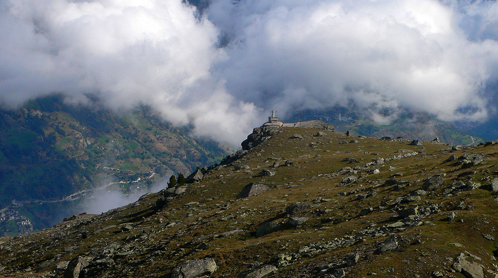
A statue of Saint Benedict looks over the Mattertal
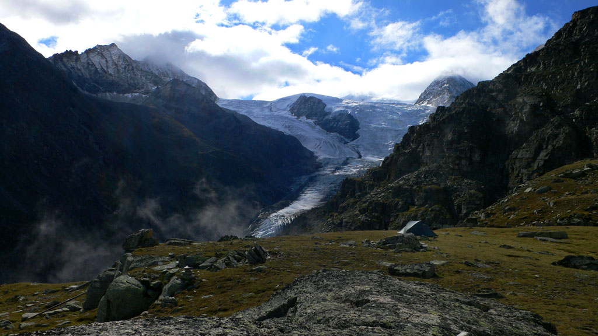
Amazing views above St. Niklaus.
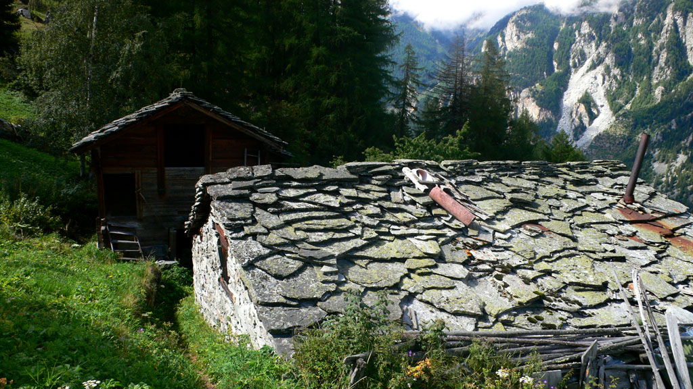
Curious slate roofs of St. Niklaus
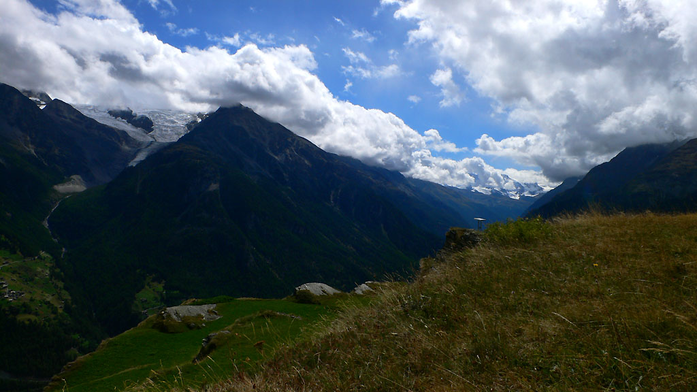
Looking upvalley from Jungu
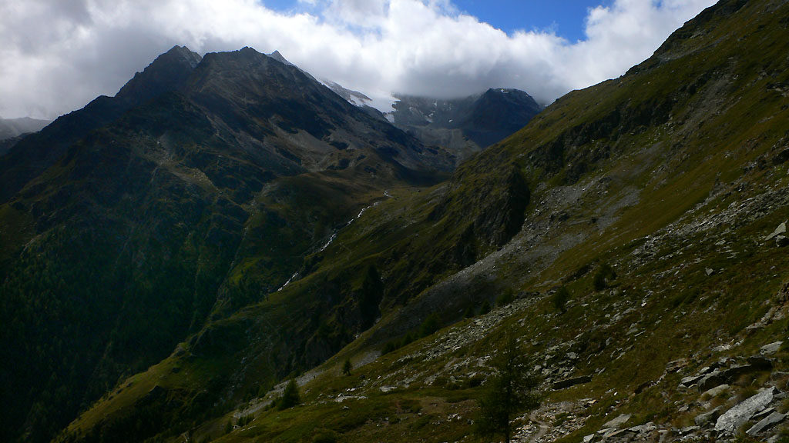
Above Jungu, looking across to the Jungtal
At the train station I’d picked up a brochure that mentioned a ski lift I could take up to the town of Jungu 2700 feet above. I could really use the boost if I wanted to reach Gruben tonight. I stared dumbly at the paper. There was a lift at 1 pm, and another at 3:30 pm. I’d hate to wait until so late. What time is it now? 12:53? Oh!
I had to run downhill, then across town steeply uphill, really huffing and puffing. “Oh man I hope I make it!” I made it to the lift, simultaneously with 4 other people who came out of the woodwork of the deserted town. “Yes!”
Jungu was really cute. I imagined coming here for a family vacation with Kris and the boys. I hiked towards the beautiful Jungtal, relunctantly turning away when my trail veered north and up into the Augstbord valley. A large “steinmandl” (stone man, or pile of rocks) marked the entry to the valley, where some hikers were enjoying the view. I continued on, gradually climbing to the Augstbordpass where the freezing wind was screaming in from the west. I descended into a broad valley that became really pleasant once the wind weakened and the sun came out. Walking beside a babbling stream, I longed to take off my boots and laze, but worries about finding a room at the inn in Gruben kept me walking. Two women told me the hotel was called the Schwarzwald Hotel, and I resolved to remember the name as I prowled the streets. Once down I had to laugh: the town was a collection of about 20 small houses, a white church and the relatively large Schwarzwald hotel. I got a dorm room completely to myself, and enjoyed a really good dinner. It was kind of lonely though. There was a rollicking guided party of about 14 people at a large table, and a reserved Canadian couple. I ended up eating alone, looking at my map and planning my days. It’s easier for me to feel lonely and awkward in a crowd. Whereas when truly alone, I’m comfortable and generally happy. Go figure.
I was pleased to have reached Gruben. Tomorrow night, I’ll be in Zinal, the first of the French-speaking valleys.
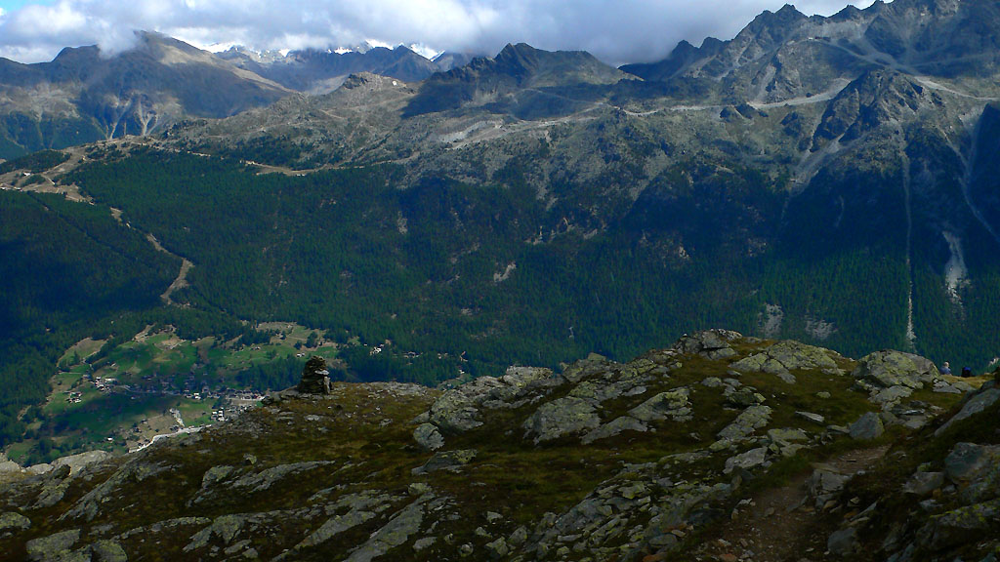
A last glimpse of the Mattertal, below the Augstbordpass
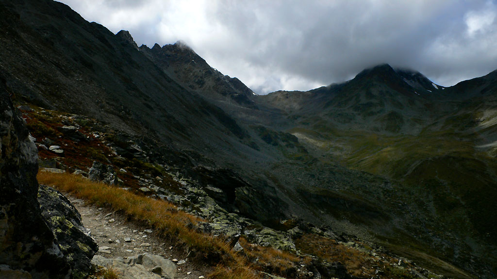
Hiking to the windy Augstbordpass
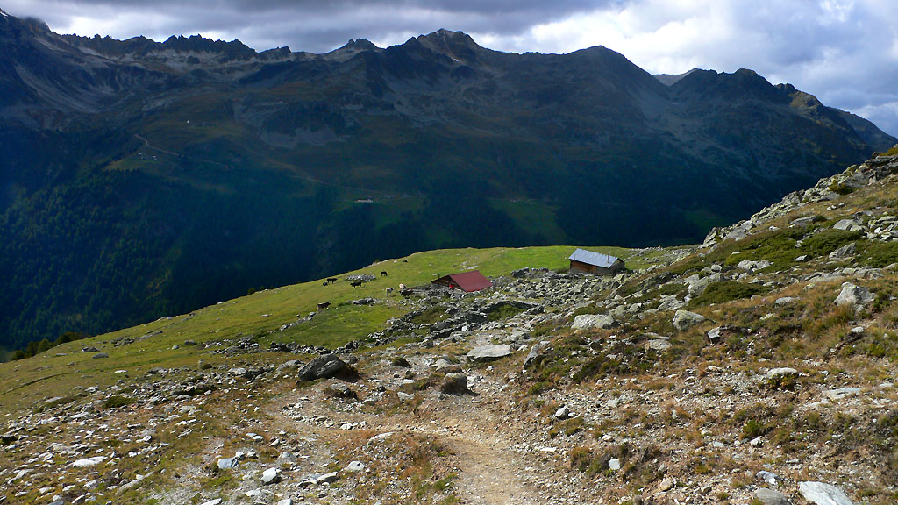
Pastures on the way down to Gruben
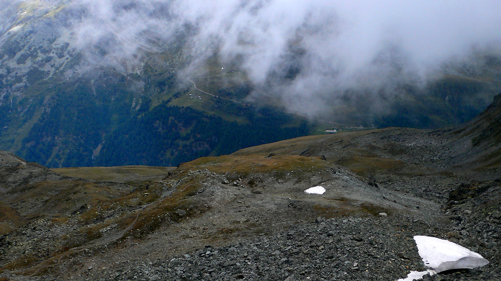
Hiking down into the Turtmanntal
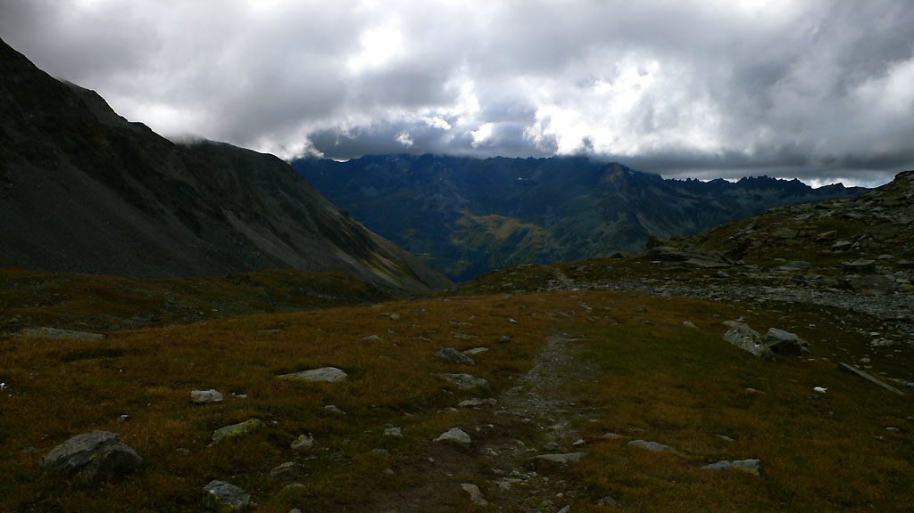
Delightful pastures above Gruben
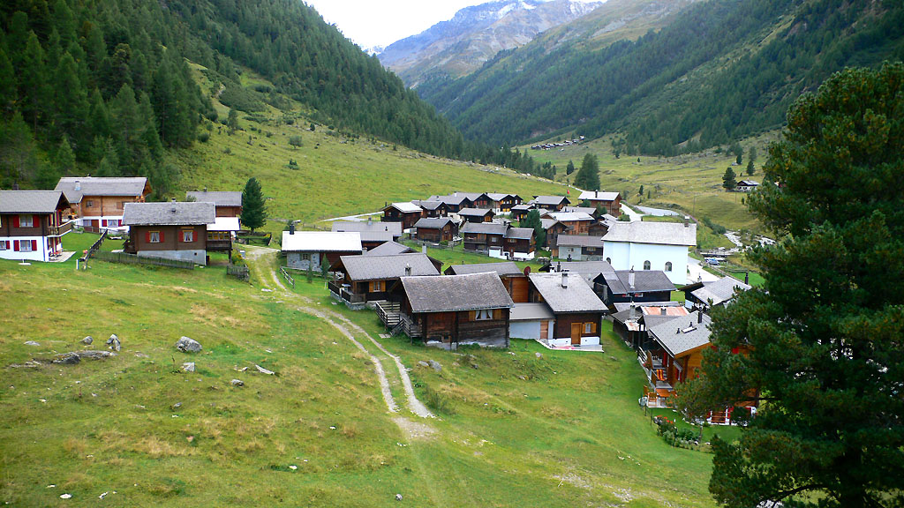
The summer-only town of Gruben
Monday
Clouds mostly obscured the big peaks today, though I got sullen glimpses of the Bishorn at the head of the Turtmantal valley. This valley, and Gruben itself, was interesting. It’s only inhabited in the summer, and retreats to pristine quiet in the wintertime. A guidebook said this was like the old Switzerland of the Golden Age of alpine climbing more than 100 years ago. It was a very appealing place.
As for the trail, first it was a road, climbing gently for a mile, then more steeply on a thin trail through light forest. In here I found a large boulder with a little shrine to the Virgin Mary embedded in the middle. A porcelin figurine of Mary shared a 6 by 3 inch ledge with a crudely carved figure - perhaps a more ancient pagan symbol? You always seem to stumble across little secrets like these in the alps. Like the “route books” found in inaccessible caves along long rock climbing routes. I made a little video of the shrine while humming the opening to “The Firebird Suite.”
Higher, I lost the trail on a steep hillside, but continued gamely up, knowing up was the only valid direction. Two farmers were up early high above, mending a fence. I kept out of sight around a corner, moving up and stepping over the occasional fence across steep cow pastures. Nowadays, the fences are just thin strips of tape or wire. Sometimes, they are electrified, and you can see the car battery sitting nearby for the charge. I think they get the cows used to the idea that all the fences are electrified, but at any given moment, only 3-5% of them actually are.
I passed a large farm building (Chalte Berg) with a generator, and admired the broad scenic valley. I was really getting an eyeload of big, pastoral valleys underneath the great peaks. It’s a terrain very different from the Washington Cascades. Maybe Colorado is like this? Despite the somber morning clouds, it gave a real sense of freedom.
I climbed gradually up into a hanging valley called the Blueomatt. Beyond the two farmers, I saw no one else until descending into Zinal hours later. Perhaps the isolation made it easier for me to lose my glasses!
I’d gotten used to wearing them for a few hours, then changing into contact lenses on the trail. I left my glasses on a rock somewhere in this large pastoral valley. Perhaps a goat tried crunching them for taste!
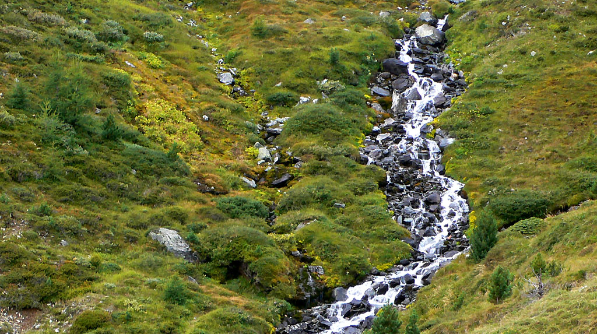
A little creek of the Turtmanntal
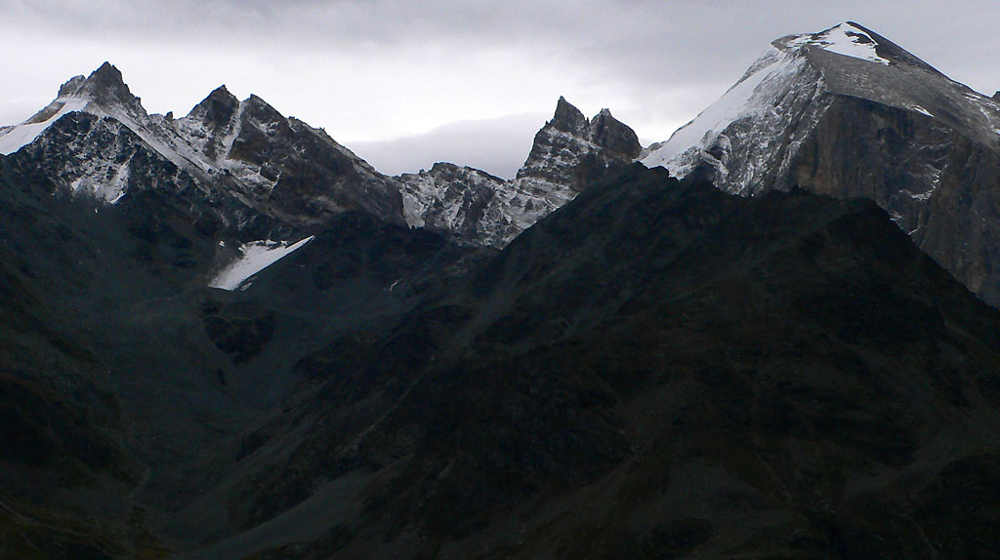
The Zinalrothorn from near the Forcletta pass
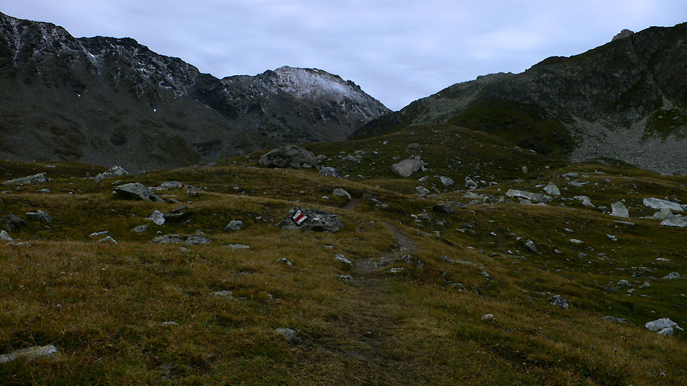
Good trail leads to the Forcletta pass
At the pass called Forcletta (2874 meters), I was walking in light snow, and admiring little flurries driven by the wind. Another stunning walk down a pastoral valley, and I was admiring dark cliffs above Zinal. The mountain called the Garde de Bordon looked especially menacing with fresh snow on it’s ledges. As I descended to the valley, the snow turned to light rain. Steep switchbacks brought me into town, where I quickly found a hotel room. Wow - Zinal was the big city, it had a supermarket, sports store, tourist office and several restaurants! It was 2:00 and everything was closed until 2:30. When things opened, I went into a newsstand and bought a paper and a paperback book, which I would spend the afternoon reading (“A Year in the Merde”…it was okay). I had a great meaty, greasy pizza for lunch, and a very “french” meal for dinner. It involved duck and some strange pimento-loaf-like meat with a hidden bone in it. Shudder.
It was neat to have my own room. I bought some shampoo so I could take a real shower. Who hoo!
Continue to read part two…